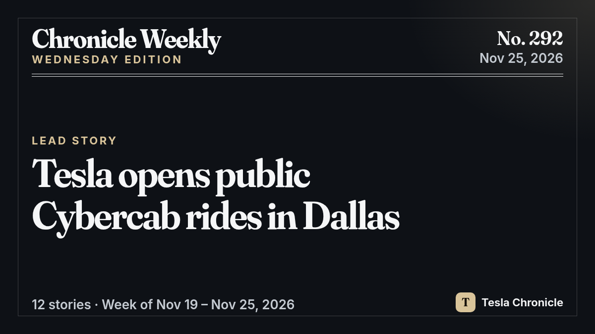
No. 292 · · Week of Thu, Nov 19 – Wed, Nov 25, 2026
Tesla opens public Cybercab rides in Dallas
7 stories
All editions

No. 292 · · Week of Thu, Nov 19 – Wed, Nov 25, 2026
7 stories
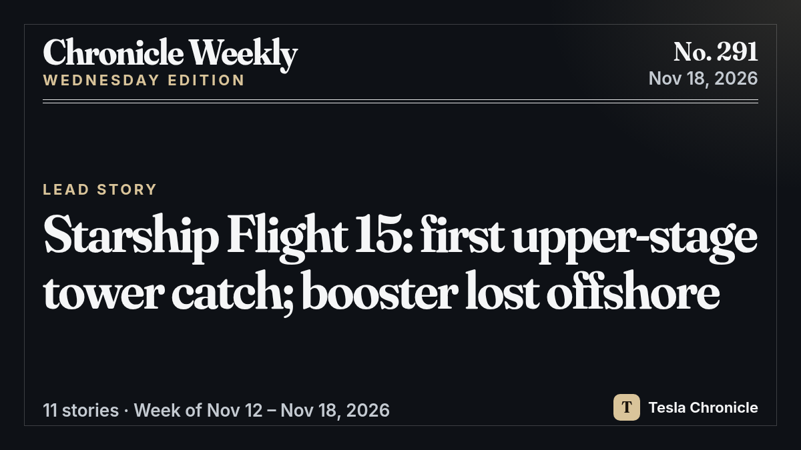
No. 291 · · Week of Thu, Nov 12 – Wed, Nov 18, 2026
11 stories
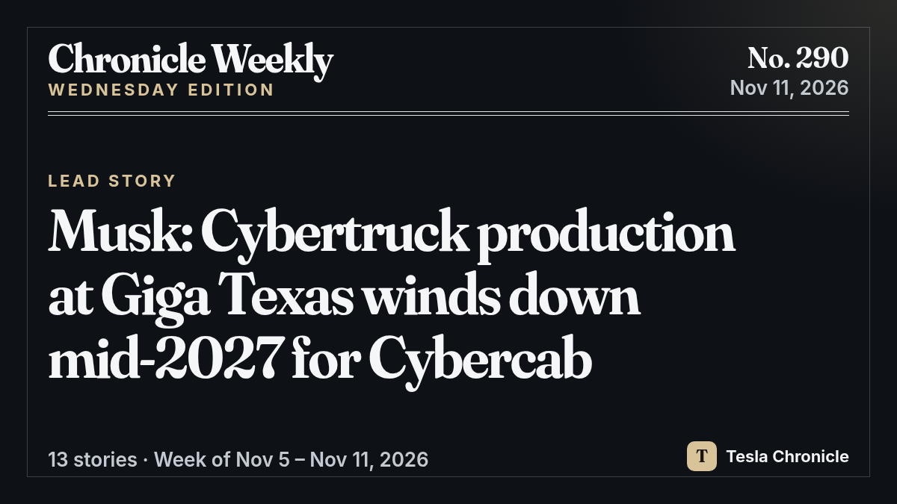
No. 290 · · Week of Thu, Nov 5 – Wed, Nov 11, 2026
13 stories
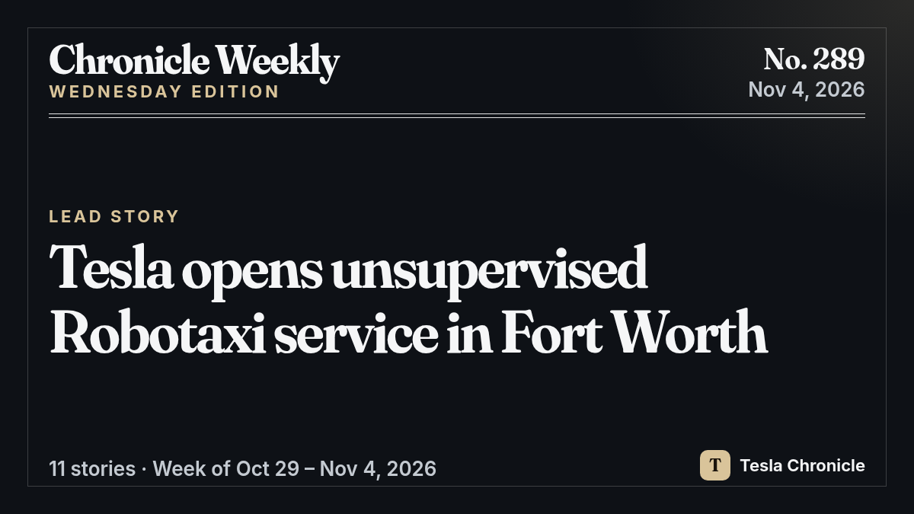
No. 289 · · Week of Thu, Oct 29 – Wed, Nov 4, 2026
11 stories
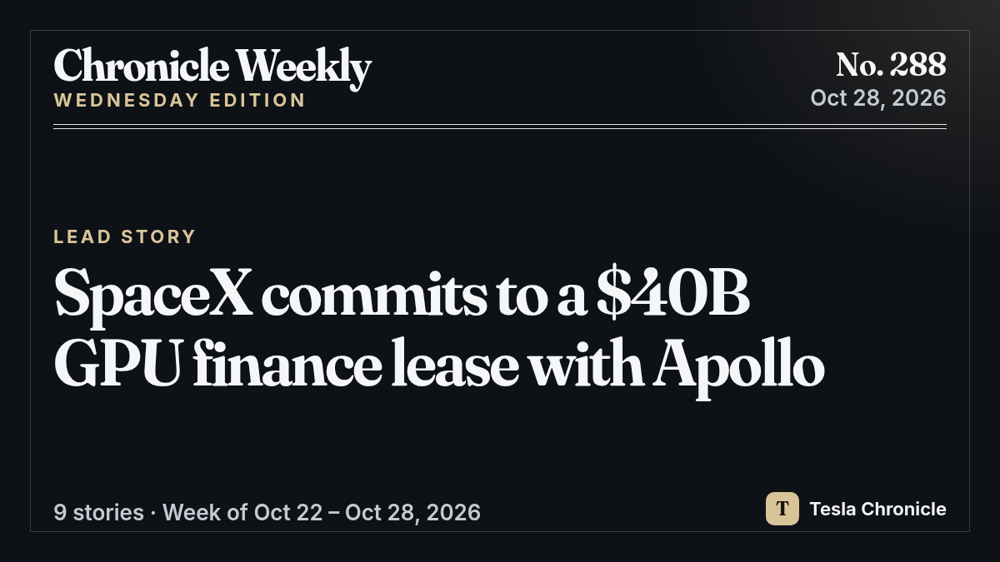
No. 288 · · Week of Thu, Oct 22 – Wed, Oct 28, 2026
9 stories
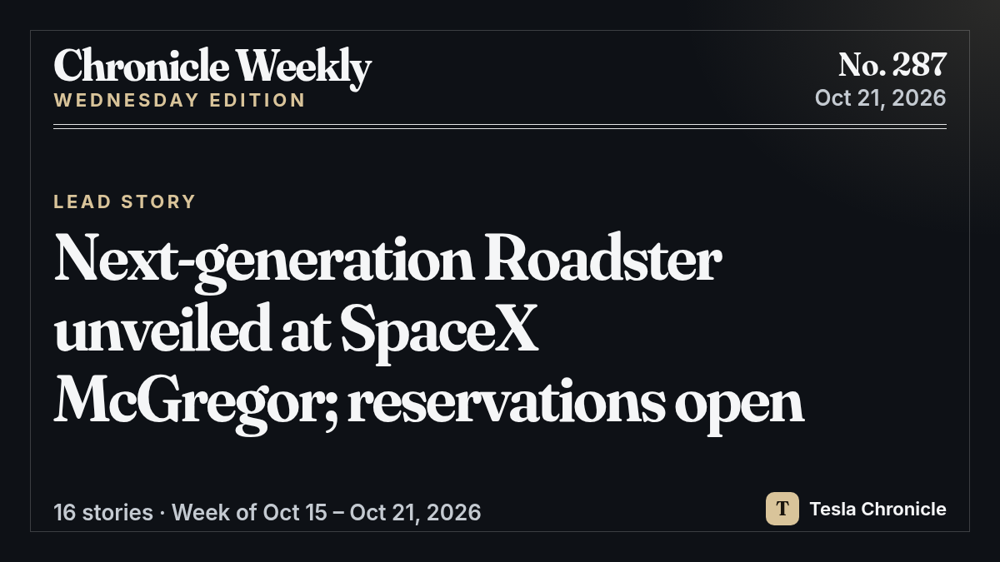
No. 287 · · Week of Thu, Oct 15 – Wed, Oct 21, 2026
16 stories
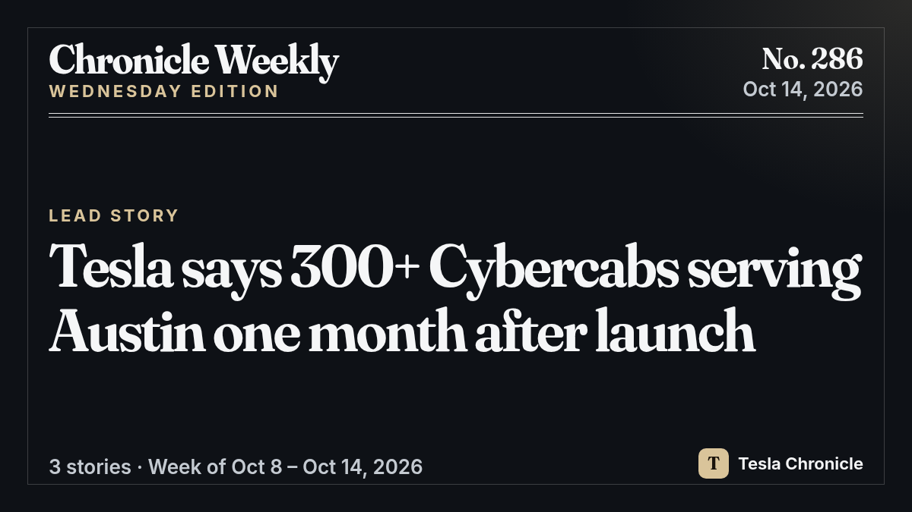
No. 286 · · Week of Thu, Oct 8 – Wed, Oct 14, 2026
3 stories
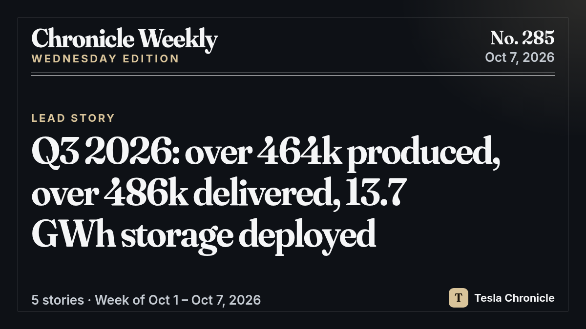
No. 285 · · Week of Thu, Oct 1 – Wed, Oct 7, 2026
5 stories
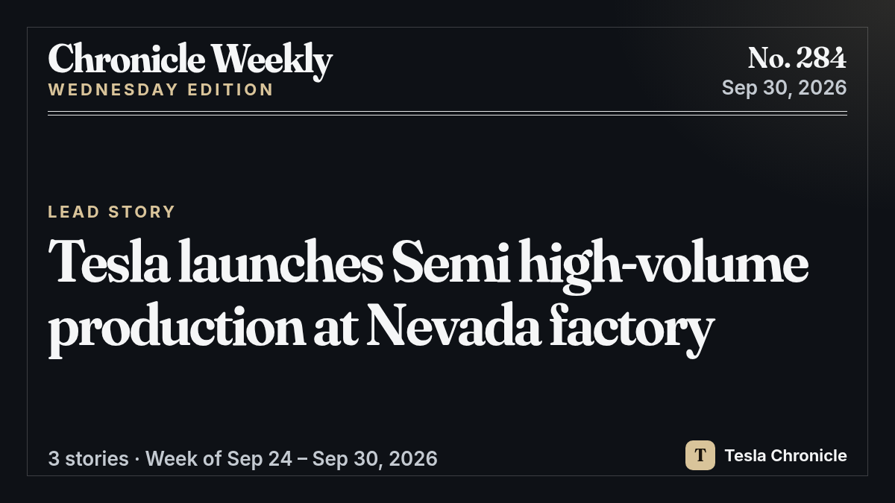
No. 284 · · Week of Thu, Sep 24 – Wed, Sep 30, 2026
3 stories
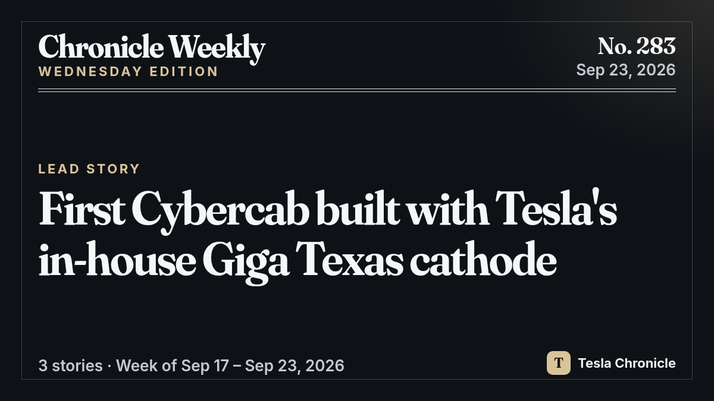
No. 283 · · Week of Thu, Sep 17 – Wed, Sep 23, 2026
3 stories
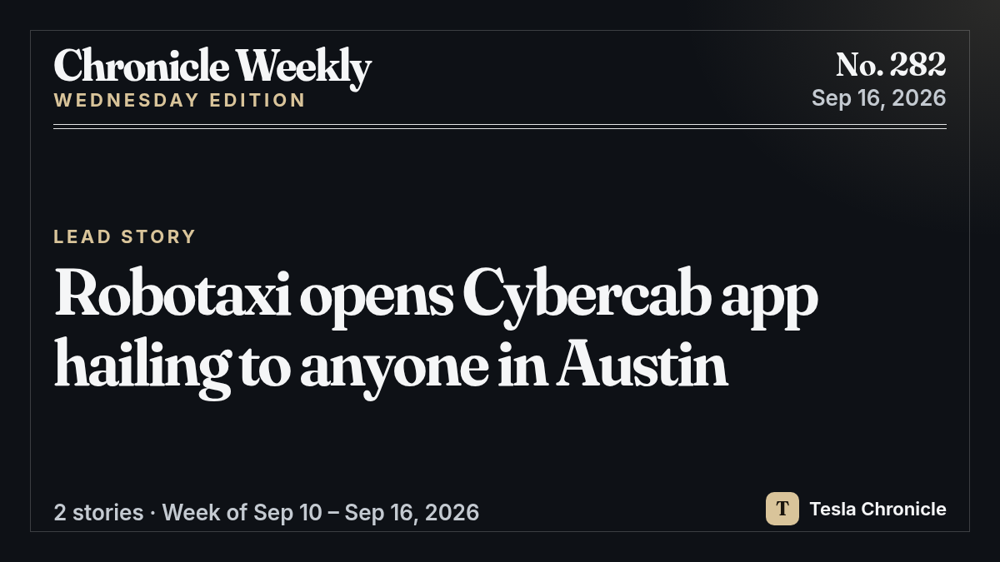
No. 282 · · Week of Thu, Sep 10 – Wed, Sep 16, 2026
2 stories